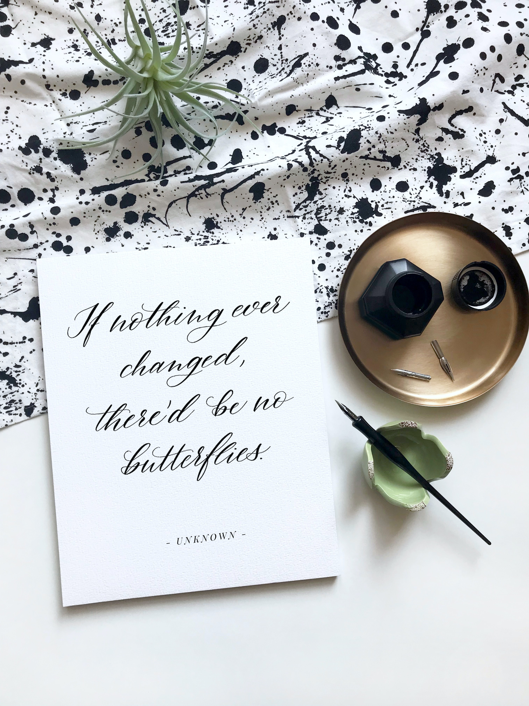

This is one question that plagues even the most successful of people. 🤔
Know that, it’s not about any outer achievements or the way you perceive your life. It is about your
core belief.
It’s painful to think that most of us believe, ‘I’m not enough’ . And what is it that we
do to cope with it-
1. Numb our feelings and push harder 👻
2. Get super busy and do more🏃
3. Take the focus off us and blame others 😤
What do we get from using these strategies- temporary relief 💯
but the 'not enough' belief still lies in a corner somewhere. 🤘
So what to do if one day you really wake up and wish to know why you are ‘not enough’? It’s simple.
Dig into your thoughts of what you think being ‘not enough’ really means. Where did that belief come from
and what flames its fire? Here’s what to do
1. Invest 10 minutes in quiet time with
yourself reflecting on this question 👀
2. Notice your self-talk (if you get
distracted, just bring yourself back) 🙈🙉🙊
3. When the ‘not enough’ messenger appears,
let it know, you got this 😎
